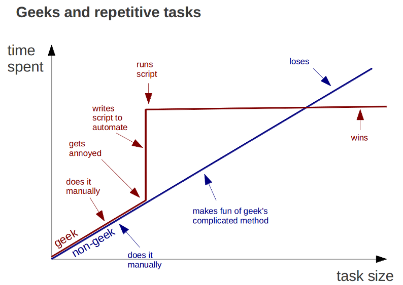
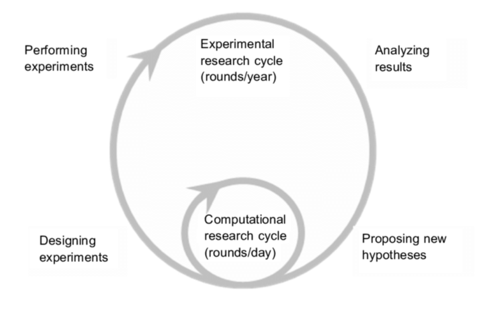
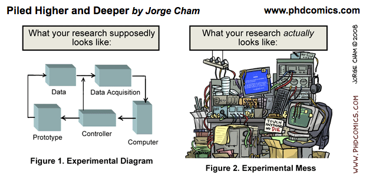

Welcome to Volterra Dry Lab Guide
Here you will find all the relevant information regarding IT equipment, servers use, tools developed and much more.
{kind=link}
Last Update: 10/10/2018 Last Author: Carlos Vivar

List of content
- Information about the servers
- Information about the NAS
- Programs developed in the Lab
- Good practices in script developing and analysis
Dry Work Phylosophy
The computers are our partners in research and every task could be improved in some ways. As scientists we need to save as much time as we could from irrelevant (a.k.a. automatic/low cognitive) tasks. There is a "law" in computer science: if you are doing something repetitive, maybe it's time to let computers do it for you.

In every task that we are doing we need to think in a balance between the effort to learn, the effort to use and the amount of time saved. This is something that must be taking in account before start doing the task. When deliberating, don't think just in the time that you'll save also in the time that your team mates are going to invest using your tool, finding your data or understanding your notes.

In the other hand the aim of this documentation is to unified the information about the IT equipment that we have. It could be use to improve the performance of data analysis taks with good manner shared among us.
Tips and papers

- Keep metadata information in a structured datatable file (excel, csv, etc)
- Use standard names for files and folders
-
Try to compress using .zip
- Reproducible research in computational science
Credits
This documentation uses Mkdocs, it's a simple tool to write plain text markdown files and then turn it into a website. If you want to know how to add content just contact with: carlos.vivarrios@unil.ch